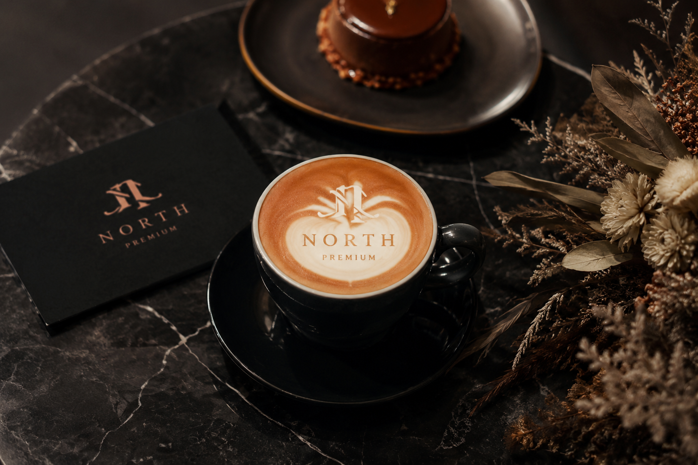

LATTE ART CATERING
ラテアートで、
イベントの記憶に残る一杯を。
目の前で描くカフェラテやブランドに合わせた演出で、写真に残したくなる体験をつくります。展示会、企業イベント、結婚式、ポップアップに対応します。
LATTE ART EFFECT
ラテアートがイベントにもたらす価値
PHOTO
撮影したくなる
受け取った瞬間に写真を撮りたくなる体験が、SNS投稿や会話のきっかけになります。
LIVE
目の前で描く演出
完成品を渡すだけでなく、描く時間そのものがイベントコンテンツになります。
BRAND
ブランド印象を残す
ロゴやテーマカラーに合わせた一杯で、企画の世界観を体験として伝えます。
LATTE ART OPERATION
見せる演出と、
提供スピードのバランスを設計します。
ラテアートは一杯ごとの体験価値が高い一方、提供スピードとのバランスが重要です。来場者数やピーク時間に合わせて、ラテアートを中心にする時間帯と、提供効率を重視するメニューを組み合わせます。
カフェラテは1時間あたり約50杯を目安に、スタッフ数やメニュー構成を調整します。
MENU
カフェラテ
ラテアートの基本メニューとして提供できます。
LOGO
ロゴ演出
ブランドや企画内容に合わせた見せ方を相談できます。
SPACE
会場条件
電源、水場、設置スペース、搬入経路を確認します。
SPEED
提供速度
想定人数に応じてメニューと人数を調整します。
BEST SCENES
ラテアート出張と相性の良いイベント
POP UP
ポップアップ
ブランドの世界観を体験として伝えたい場に向いています。
EXHIBITION
展示会
来場者が立ち止まり、写真を撮る理由を作れます。
WEDDING
結婚式
ゲストへのおもてなしと写真に残る演出を両立します。
FAQ
ラテアート出張のよくある質問
ロゴラテは必ずできますか？
内容や実施条件によりご提案方法が変わります。希望イメージがあれば事前にお知らせください。
何杯くらい提供できますか？
カフェラテは1時間あたり約50杯が目安です。人数や待ち時間を考慮してメニュー構成を調整します。
屋外イベントでも依頼できますか？
屋根、電源、水場、天候時の対応を確認し、実施可能な形をご提案します。
DESIGN TYPES
ラテアートのデザインタイプ
「ラテアート」と一言でいっても、技法によって演出のしやすさや提供スピードが変わります。代表的な4タイプを整理しました。
FREE POUR
フリーポア
ミルクピッチャーの注ぎ方だけでハート、リーフ、チューリップなどを描く技法です。提供スピードに優れ、ピーク時間でも展開しやすい構成です。
ETCHING
エッチング
専用のピックで細部まで描き込む技法です。動物やキャラクターなど繊細な絵柄に向き、特別な一杯としての満足度を高めます。
LOGO ART
ロゴラテ
企業ロゴやイベントロゴをラテの上に再現します。ブランディング目的の展示会や企業イベントで、体験として記憶に残ります。
3D / CUSTOM
3Dラテ・カスタム演出
立体的なミルクフォームや、企画テーマに合わせた特別な絵柄など、写真映えする一杯を相談いただけます。実現可否は内容により確認します。
RELATED SERVICES
他の出張シーン・関連サービス
REQUEST A QUOTE
ラテアート出張を相談する
イベント内容、想定人数、希望する演出イメージを分かる範囲でご相談ください。